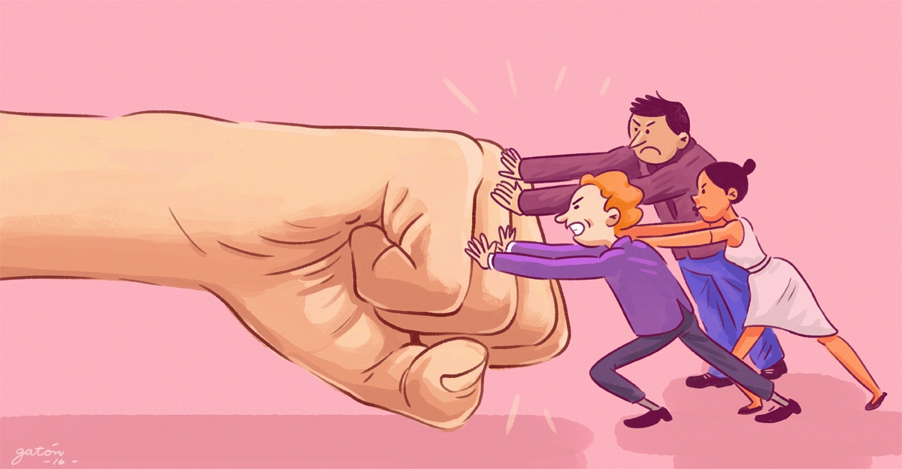

NO A LA VIOLENCIA
CONTRA
LOS SERES HUMANOS
¿EN QUÉ CONSISTE?
- Evitar el daño físico y emocional
- Valorar la vida de todos por igual
- Hablar con respeto en vez de pelear
- Tratar a los demás con equidad
- Defender lo correcto sin usar la fuerza
CAUSAS DE LA VIOLENCIA
- Heridas, dolor, discapacidad o incluso la muerte
- Deja trauma emocional como el miedo, ansiedad, depresión y odio
- Suele generar más violencia como respuesta (venganza)
- Destruye familias, amistades y la confianza en la comunidad
- Hace que las otras personas normalicen la falta de respeto al someterse a la violencia, ya sea violencia física, psicológica, etc
- En vez de resolver el problema de raíz, se crea uno nuevo
¿EN QUÉ CONSISTE LA VIOLENCIA FÍSICA?
- Utilizar la energía física para controlar o imponerse sobre otra persona
- Existe el deseo (consciente o impulsivo) de causar dolor o marcar un límite mediante la agresión
- Quien agrede busca demostrar superioridad física o jerárquica
- Se usa el castigo corporal para obligar a la víctima a hacer algo o para "corregir" su conducta
- Invadir y agredir el territorio físico y la integridad del otro sin su consentimiento
¿EN QUÉ CONSISTE LA VIOLENCIA PSICOLÓGICA?
- Hacer que la persona se sienta inútil, tonta o que no vale nada
- Vigilar lo que el otro hace, con quién habla o cómo se viste
- Separar a la persona de sus amigos y familiares para que no tenga apoyo
- Ridiculizar, insultar o burlarse de la persona en público o en privado
- Usar la culpa o el engaño para que la otra persona haga lo que el agresor quiere
- Ignorar a la persona a propósito como forma de castigo (la "ley del hielo")
- Intimidar con abandonar a la persona, quitarle algo que quiere o hacerse daño a sí mismo
¿EN QUÉ CONSISTE LA VIOLENCIA SEXUAL?
- Realizar cualquier acto de tipo sexual sin el permiso libre, claro y voluntario de la otra persona
- Utilizar una posición de autoridad, fuerza o manipulación para obligar al otro
- Tocar, mirar o difundir imágenes íntimas sin autorización
- Usar chantajes, amenazas o presión psicológica para obtener favores sexuales
- Tratar el cuerpo de la otra persona como un objeto para satisfacer un deseo propio, ignorando su voluntad
¿EN QUÉ CONSISTE LA VIOLENCIA VERBAL?
- Alzar la voz para intimidar y someter a través del miedo
- Ridiculizar las ideas, el físico o los logros de la otra persona
- Criticar constantemente de forma destructiva
- Advertir con agresiones futuras para controlar el comportamiento del otro
¿EN QUÉ CONSISTE LA VIOLENCIA SOCIAL?
- Prohibir o dificultar que la persona vea a sus amigos, familiares o conocidos
- Vigilar con quién sale, a qué hora regresa y qué hace fuera de casa
- Ridiculizar a la persona frente a otros para dañar su imagen social
- Ignorar o dejar fuera a alguien de grupos o actividades de manera intencional para hacerle sentir rechazo
- Impedir que la persona asista a eventos, trabaje o estudie para que no tenga una red de apoyo propia
¿EN QUÉ CONSISTE LA VIOLENCIA ECONÓMICA?
- Vigilar o quitarle el sueldo y las ganancias a la otra persona
- Impedir que la persona trabaje o estudie para que no tenga dinero propio
- Esconder facturas, cuentas bancarias o decisiones financieras importantes
- Negar recursos para necesidades básicas (comida, medicinas, ropa) como forma de presión
- Obligar a la persona a trabajar sin pago o a poner bienes a nombre del agresor